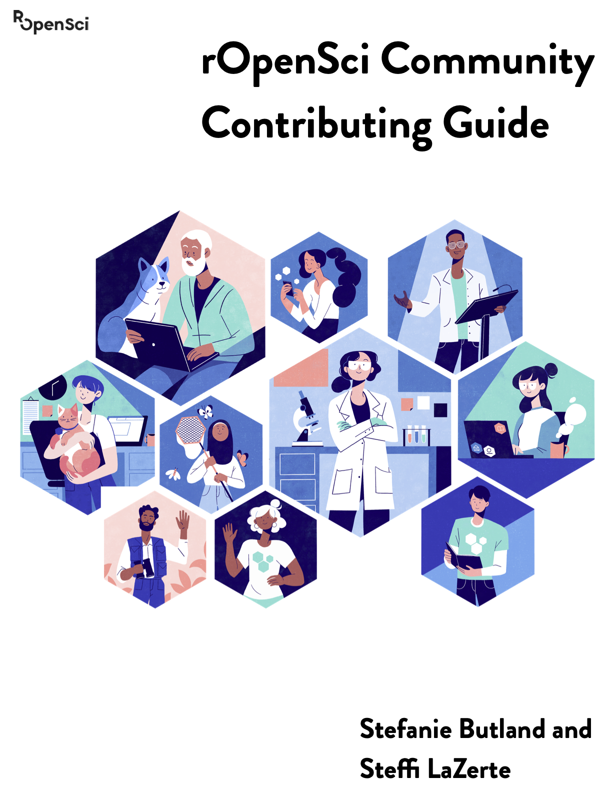

Figure 0.1: Cover illustration by Lydia Hill
Cover illustration by Lydia Hill


This work is licensed under a Creative Commons Attribution-NonCommercial-ShareAlike 3.0 United States License.
Please cite this guide as:
Stefanie Butland & Steffi LaZerte. (2020). rOpenSci Community Contributing Guide (Version v0.1.0). Zenodo. http://doi.org/10.5281/zenodo.4000532